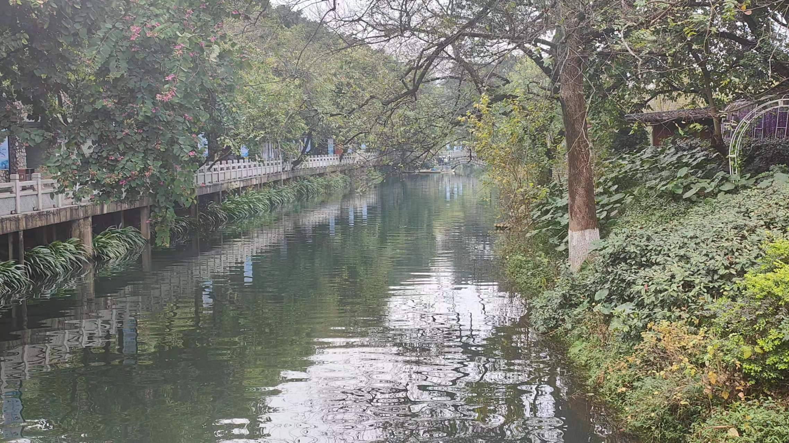
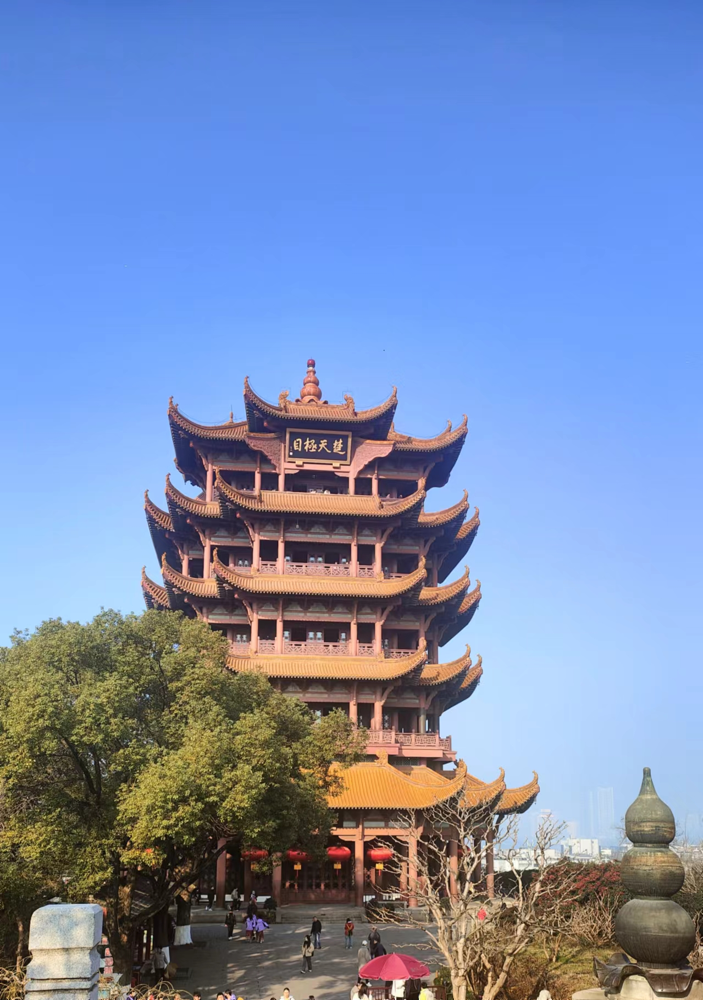
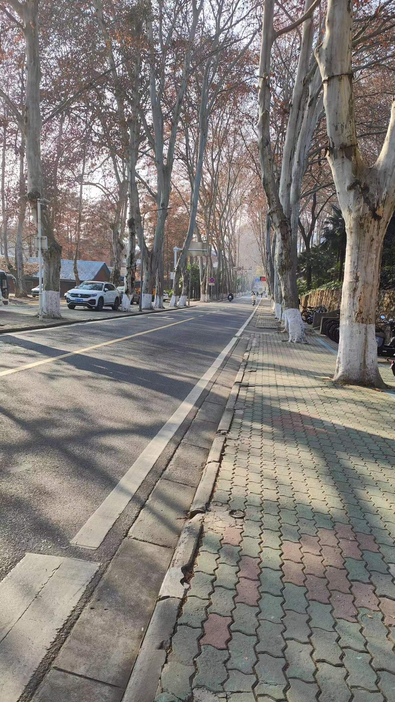
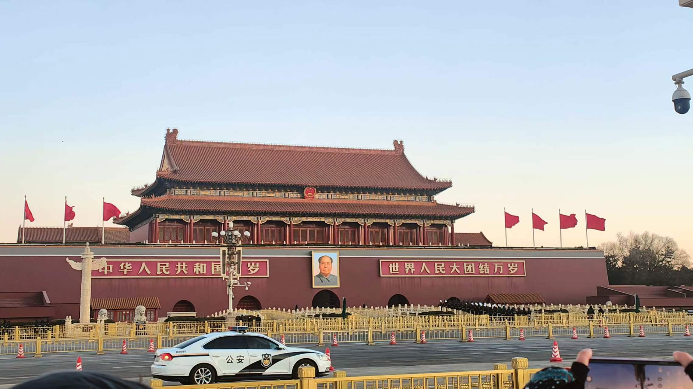
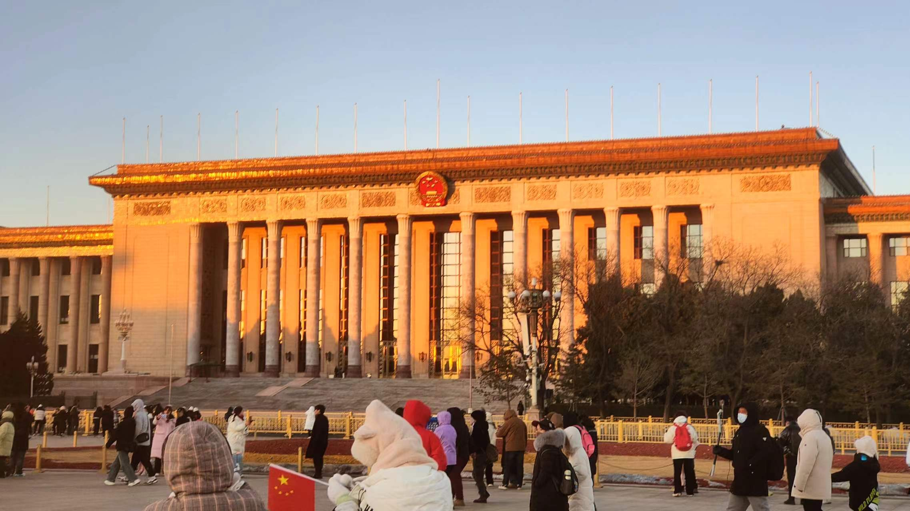

我背起行囊，踏上了从南宁到北京的旅程。南宁，这座绿意盎然的南方城市，是我的出发地。在这里，我品尝了米粉、螺蛳粉等地道的广西美食，还感受了南方湿润的气候和独特的民族文化。
向北出发，我首先抵达了桂林。站在漓江边，我被那如诗如画的山水风光深深吸引。阳朔的田园风光更让我流连忘返，我租了一辆自行车，沿着乡间小路骑行，呼吸着清新的空气，感受着大自然的和谐与宁静。
接下来，我来到了武汉。这座城市的历史底蕴和文化氛围让我为之着迷。我漫步在黄鹤楼下，眺望着长江的壮阔，感受着古代建筑的魅力。我还去了武汉大学，欣赏了那里美丽的校园风光，仿佛置身于一幅画中。
 最后，我来到了北京。作为中国的首都，北京展现出了古老而又充满活力的魅力。我游览了故宫、颐和园等著名景点，感受着中国历史的厚重和文化的瑰丽。我还去了天安门广场，目睹了中华民族的庄严与神圣。在胡同里，我品尝了地道的北京小吃，深入了解了北京的民俗文化。
 这次从南宁到北京的千里之行，让我深刻感受到了中国的广袤与多彩。我不仅增长了见识，丰富了人生阅历，还培养了独立自主、勇于探索的精神。这是一次难忘的旅行，也是一次宝贵的人生经历。我期待着未来的旅程，继续探索这个美丽的世界。